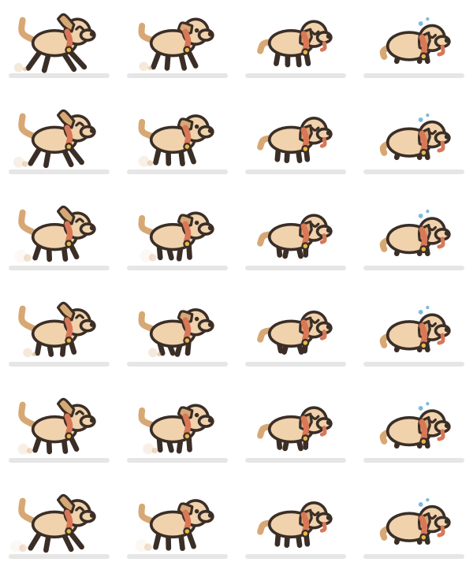
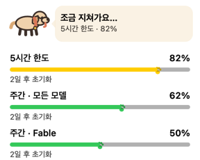
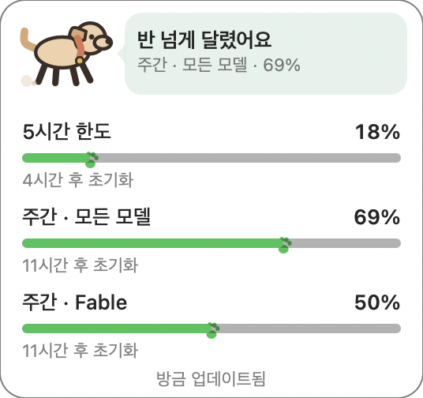

아래는 시안이 아니라 빌드된 앱에서 그대로 뽑은 그림이다. 시안과 실물이 갈라지면
시안 쪽이 거짓말이 되므로, 이 페이지는 ./build.sh 후
Clife --dogsheet <path> 로 다시 뽑아 갱신한다.
SVG 시안을 src/dog.swift 로 손으로 옮긴 결과. 시안의 도형을 원·타원·둥근 선·2차 곡선으로
제한해둔 덕에 NSBezierPath 에 1:1로 대응한다. 블라인드 포팅은 “컴파일은 되는데 엉뚱한 걸
그리는” 전형적인 작업이라, 눈으로 확인할 수단을 코드에 같이 넣었다.
가로는 4단계, 세로는 한 스트라이드를 6프레임으로 자른 것. 달리기는 키프레임 두 장을 이징으로 섞어서 만든다 — 스프라이트 시트를 들고 있으면 포즈를 손볼 때마다 맞춰줄 게 생긴다. 몸통이 같이 튀는 게 “다리만 흔드는 정지한 몸”과 “달리는 개”를 가르고, 뒷발 뒤 흙먼지가 땅을 밀고 있다는 느낌을 만든다. 움직일 때만 괜찮아 보이는 애니메이션은 아무도 검수할 수 없으므로, 시트로 뽑아 펼쳐서 본다.

NSMenuItem 안의 커스텀 뷰라 실행 중에는 캡처가 안 된다 — 캡처하려는 순간 메뉴가 닫힌다.
같은 뷰를 오프스크린으로 렌더해서 실제로 조립된 레이아웃을 확인한다. 히어로 강아지는 가장 먼저 막히는
한도 하나만 대변하고, 각 줄의 발자국이 그 한도의 현재 위치를 찍는다.

WidgetKit 익스텐션이 아니라 데스크톱 레벨에 고정된 NSPanel. 이 프로젝트는 의도적으로
애드혹 서명이라 위젯 익스텐션은 아예 로드되지 않는다. 내용은 드롭다운과 같은 뷰를
재사용한다 — 두 벌로 만들면 둘 중 하나를 고칠 때마다 같은 숫자를 다르게 말하기 시작한다.

드래그로 옮기고 위치는 저장된다. 사라진 디스플레이에 저장돼 있으면 다시 화면 안으로 되돌린다.
위젯의 강아지는 열려 있는 동안 계속 달린다. 그래서 값을 치렀는지 재봤다 — 처음엔 코어 하나의 3.6% 였다. 매 프레임 라벨까지 포함해 뷰 전체를 다시 그리고, 스무 개 남짓한 패스를 다시 스트로크하고 있었기 때문이다. 강아지 사각형만 무효화하고, 한 스트라이드를 한 번만 래스터라이즈해 캐시하고, 프레임율에 상한을 두니 1.0% 가 됐다. 그중 애니메이션 자체는 0.2%뿐이다. 그래도 아까우면 드롭다운에서 강아지 달리기를 끌 수 있다.